Structure of Gregorian Chant notation
This document was written by a monk of the abbey of Sainte-Madeleine du Barroux to describe his vision of the structure of the writing of Gregorian chant. It was originally concerned with defining an XML standard for describing Gregorioan chant. While Gregorio did at one point try to implement this XML standard, that feature was so little used that it has been abandoned. Gregorio still uses this structure, however, when analyzing its gabc code, so users interested in understanding how Gregorio "thinks" about a score may find it useful.
Introduction
Just as our sentences are composed of words, syllables and letters, it is possible to distinguish, in the typographical transcription of Gregorian chant, neumes, neumatic elements and neumatic glyphs.
Thus we have the following analogy (we will explain the details later):
- words → neumes
- syllables → neumatic elements
- letters → neumatic glyphs
Here is an example of a neume, which we will analyze throughout this document:
Example of a neume
The first element of this neume is  .
.
This element itself is composed of the glyph followed by the three glyphs , 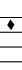 and  .
.
Our example of a neume composed of 32 notes may be surprising. It is just a choice of vocabulary: we call a neume “the group of notes sung on the same syllable”. This example of a neume, found in the Antiphonale Monasticum (Solesmes, 2005, vol. I, p. 542-543), comes from the following piece:
Complete score
The neumatic elements
Musically, the neumatic elements are a sequence of notes sung in a connected manner and forming a certain entity. The vocabulary used here to indicate these elements vary from one liturgical book to another. Here are the names usually given to the elements that compose the neume that we took as an example:
Role of the neumatic elements
These elements give an indication of rhythm by the distinctions or articulations that they introduce to the thread of the melody. It would have been possible, without changing the melody of the first eight notes of our neume, to transcribe it like this:  instead of 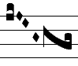.
instead of 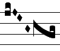.
If the second transcription has been retained instead of the first, it does not seem daring to think that this choice was dictated by a musical reason. Some would translate this nuance in the manner of singing, by distinguishing the last punctum inclinatum with a little more “weight”, a very light sustain. Just to think of articulating the two neumatic elements well can at times be sufficient to render this nuance.
The distinction between neumatic elements is made by “neumatic cuts”. As we can see in the neume sung on Dó, these cuts are more or less in length. Depending on the liturgical book, their length may vary from half a square note to two square notes.
Whether the musical nuance indicated by a neumatic cut is short or long, it is not the role of the typographer to care about it. But to reproduce a piece that is already written, he needs to respect his model, taking care of the neumatic cuts he sees. Indeed, these nuances have their origins in the first Gregorian chant manuscripts that were transcribed into typography this way.
Definition of the neumatic element
We will come back later to the notion (still a bit confused) of neumatic cut, but we can already define the neumatic element as “a group of notes without a neumatic cut”.
The list and the number of neumatic elements
Here are the various types of neumatic elements that we can find in current Gregorian chant scores:
If we don't consider the different heights (pitches) of the notes and the liquescent forms, this list is quite exhaustive for the elements with one or two notes. Starting with the three-note elements, the number of elements grows sharply, and giving the list of all the elements would appear, if not impossible, at least tiresome, and not useful for constructing a lexical typography for chant.
The concept of a “neumatic glyph” will let us have a simpler vocabulary, easily exhaustive for the typographical transcription of Gregorian chant.
But before we talk about that, we must clarify the question of spaces that we can encounter in the thread of certain neumatic elements. Indeed it is not always easy to tell the difference between, on one hand, a space inside a neumatic element, and on the other hand, a neumatic cut separating two neumatic elements.
As the typographer is by definition neither a musician, a musicologist, nor a gregorianist, he needs a vocabulary adapted to his work. That's why we propose to simplify the notion of neumatic cut, from a typographical point of view, and to include in it all the spaces, excluding those found:
- in groups of two or three successive puncta quadrata, strophae or virgae on the same pitch;
- in elements starting or ending with several puncta inclinata.
Therefore, the following written forms will be considered as only one neumatic element:
But the following written forms as two different elements:
Difficulties resulting from this choice in establishing a XML standard
Let us take two examples:
- this neumatic element: 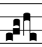 called scandicus flexus, is written in the Nocturnale Romanum (Hartker Verlag, 2002, p. 501), in the following way: 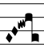
- the element 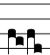 named porrectus flexus, is written this way: 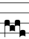 (Ibid., p. 499) but we could also choose to write it more aesthetically this way: 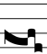.
If we consider the scandicus flexus and the porrectus flexus typographically sometimes as only one element and sometimes as two, it is very hard to establish a standard XML representation.
Do we have to revert to a more musical definition of the neumatic cut and abandon the one we just defined?
It does not seem so, because in a lot of cases, the distinctions are debatable and indeed debated. What can be said, for example, of the written forms of the porrectus flexus such as these: 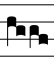 and 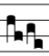 ? In some manuscripts they are both written like this 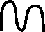.
Not to speak of the salicus, the subject of so many discussions. and transcribed with the following forms:
Different representations of the salicus
The solution seems to be not to give a name to the different neumatic elements. But instead, it will certainly be useful to do this at the level of the neumatic glyphs.
The neumatic glyphs
What we have said above about the great number of existing and imaginable neumatic elements and the difficulty of naming them shows that it is necessary to turn back to the first and smallest units for the typographical composition of a gregorian chant score.
Spontaneously a typographer will seek to analyse what are the different shapes he needs to compose his scores, and he will come to uncover four principal genres of shapes: 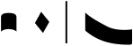 that will be set next to one another.
He will also seek to simplify his task by trying to find less elementary shapes that will enable him to compose one or several notes at a time. Such as for example the following shapes: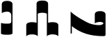
Typography with lead characters evidently had to invent a typeface comprising this series of elementary forms or glyphs. For our part, we have never had the occasion to see such a typeface. The creators of digital fonts have proceeded in the same way, replacing the various neumatic glyphs with their tables of characters.
Definition of the neumatic glyph
We can thus define the neumatic glyph as “a graphical sign that, alone or with others, represents a neumatic element”.
The list and the number of neumatic glyphs
In the first pages of most of the liturgical books of the 20th century, we can find tables of “neumes”. These tables are unfortunately the source of a certain confusion between neumatic elements and neumatic glyphs.
On one hand, they are generally not sufficient to give an exhaustive list of all the kinds of neumatic elements. They are made to be read by singers, not typographers, so they go further than the simple enumeration of elementary glyphs.
What is the maximum number of notes in a neumatic element? It seems quite hard to fix this number. Where should we stop?
Example of an extremely long neumatic element
For example we can find in this type of tables the following “neumes”:
punctum, pes, scandicus, and scandicus
It seems obvious that the typographer won't need to have in his case a sequence of glyphs corresponding to all the possible scandicus forms, more so, as we can sometimes find a scandicus with five or six notes. To compose this kind of neumatic element, it will be simpler to put together some puncta and some podatuses.
How can we establish a simple and complete list of neumatic glyphs?
It seems more manageable to limit ourselves to the written forms without a space. Then we need to choose a maximum number of notes. Taking into account these two conditions, finally we must seek all the possible written forms according to the different sequences of pitches and all the variations.